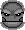

Gracze komputerowi
Ka¿dy gracz komputerowy jest reprezentowany przez ikonê, która opisuje ilo¶æ
wykonywanych przez niego operacji, co daje mniej wiêcej jak jest on dobry.
Niektórzy gracze maj± swoje w³asne ikony, w takim wypadku bêdziesz musia³
zajrzeæ do jego rankingu aby zobaczyæ jak jest dobry.
- Bardzo g³upi gracze
- Ci gracze podejmuj± decyzje kompletnie nie zwracaj±c uwagi na planszê,
wiêc s± to bardzo s³abi gracze.
- G³upi gracze
- Ci gracze wykorzystuj± ró¿ne strategie, które w rzeczywisto¶ci nie
s± zbyt dobre.
- Normalni gracze
- Ci gracze s± z regu³y podobni do siebie. G³ównym ich celem jest maksymalne
rozszerzenie swoich wp³ywów na ca³ej planszy.
Jest to zaskakuj±co dobra strategia.
U¿ywaj± oni tego samego zasobu informacji jak G³upi i Sprytni gracze.
- Sprytni gracze
- Ci gracze u¿ywaj± najlepszych strategii dostarczonych przez
Normalnych Graczy.
-  My¶l±cy gracze
- Ci gracze u¿ywaj± klasycznych technik sztucznej inteligencji, jak
przewidywanie kilku ruchów naprzód i wybieranie najlepszego ruchu.
Jednak¿e ich wymagania obliczeniowe s± bardzo du¿e w stosunku do mo¿liwo¶ci.
- Sprytni gracze
- Ci gracze wykonuj± najwiêcej ze wszystkich typów graczy obliczeñ i dziêki
temu uzyskuj± najlepsze wyniki.
Ten typ wymaga najwiêcej od dobrego ludzkiego gracza.
Spis tre¶ci